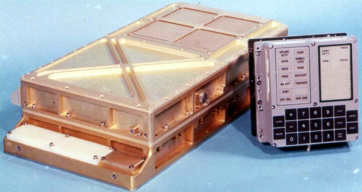
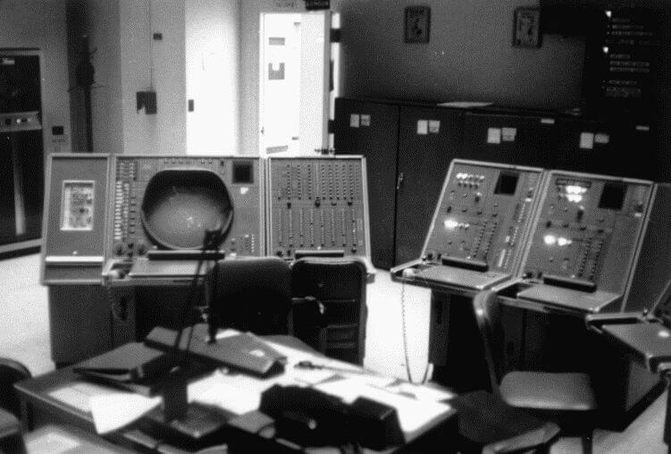

Margaret Heafield Hamilton é engenheira de software e cientista da computação.
Trabalhou em projetos para as Forças Armadas Americanas e aos 27 anos escreveu o código que
possibilitou ao homem pisar na lua pela primeira vez.
Foi pioneira na área de Ciẽncia da Computação e Engenharia de Software, é creditada como a criadora do termo
"Engenharia de Software".
Links

Apollo 11 Guidance Computer (AGC)
O Apollo Guidance Computer (AGC) era um computador de bordo que atuava orientação, navegação e controle do
Módulo de Comando e do Módulo Lunar que foram programados por Margaret Hamilton e equipe no Projeto Apollo.
Acesse o código-fonte desenvolvido por Margaret e equipe para a missão do Apollo 11.
Projetos
Software de detecção de aeronave inimiga, Software do Módulo Lunar e Módulo de Comando do Computador
Apollo Guidance ... Saiba mais sobre os projetos que Margaret Hamilton trabalhou.
Projetos
Projeto Sage
O Projeto SAGE foi uma extensão do Projeto Whirlwind inciado no MIT em 1944. O Projeto Whirlwind tinha o
objetivo de desenvolver um simulador de
vôo para treinamento de equipes de bombas durante a Segunda Guerra Mundial. Após mais de 10 anos de
desenvolvimento o projeto foi
descontinuado em 1959 por ser considerado muito caro para operar, sendo então o precursor do projeto SAGE
no qual Margaret foi convocada para trabalhar
em 1961.
O projeto Semi-Automatic Ground Environment ou Ambiente Terrestre Semi-Automático (SAGE) era o modelo de
computador utlizado pelo sistema de
defesa aéreo dos Estados Unidos e visava a detecção de aeronaves não-amigáveis. Margaret integrou ao
laboratório Lincoln no MIT e foi uma das primeiras
programadoras a escrever o software para o protótipo de computador de interceptação AN/FSQ-7 (Computador
XD-1), o software no qual Margaret
distinguia a assinatura de radar identificando aeronaves "estranhas".
"Quando o computador travava durante a execução do programa, não havia como se esconder.
Luzes piscavam, sinos tocavam e todos os desenvolvedores
e operadores de computador, vinham correndo para descobrir de quem era o programa que estava fazendo algo
ruim no sistema."
— MARGARET HAMILTON (tradução livre)
Porém, não foi nada fácil para Margaret o desenvolvimento do software, pois a programaçação na época não
era um campo vasto de conhecimento e muito menos
Engenharia de Software, os programadores adquiriam conhecimento com a prática. Margaret ainda teve que
lidar com o que ficou das tentativas dos programadores
anteriores de levar o projeto para frente:
“O que eles faziam quando você começava nessa organização era colocar você em um projeto
que ninguém tinha conseguido ainda entender, ou
sequer fazer algo funcionar. Quando eu comecei, eles me colocaram nesse projeto também. Era um código
complicado e a pessoa que primeiro escreveu o software
se orgulhava do fato que todos os comentários estavam em Grego ou Latim. Então me colocaram nesse projeto,
e eu consegui fazer ele funcionar. Eu até imprimi
as respostas em Grego e Latim. Eu fui a primeira que conseguiu fazer o projeto funcionar” - MARGARET
HAMILTON

Um certo dia, os seus colegas do MIT resolveram modificar o software base do computador de trabalho.
Porém, era a vez da Margaret utilizar o computador, não demorou
para ela perceber que havia algo errado...
Projeto Apollo
Hamilton entrou para o Laboratório de Instrumentação Draper do MIT para o desenvolvimento do software do
Apollo Guidance Computer que visava o controle do
Módulo de Comando e Módulo Lunar (responsável pelo pouso na Lua e retorno à órbita da Lua).
Ela foi a primeira programadora contratada para o projeto e rapidamente se tornou Diretora da Divisão de
Engenharia de Software. Vale destacar aqui que o tal cargo
não existia, pois a
Engenharia de Software não existia como área do conhecimento.
Como diretora, Margaret era responsável por coordenar a equipe de desenvolvimento do software além de
escrever e corrigir o código. Sua equipe escreveu e testou todo o software de vôo a bordo para o Módulo de
Comando e Módulo Lunar da espaçonave Apollo.
Vale ressaltar que na época os códigos eram escritos manualmente. Isso gerou a famosa foto que viralizou
há alguns anos nas redes sociais, com Margaret ao
lado de uma pilha de livros de códigos escritos:
Nos anos seguintes à missão Apollo, o código ainda foi utilizado para o projeto Skylab (estação
especial).
O Software da Missão Apolo
O Software foi desenvolvido para o computador Apollo Guidance Computer (AGC), computador digital
produzido para o programa Apollo, para fornecer dados e interfaces eletrônicas para orientação, navegação
e controle da espaçonave Apollo. Foi instalado em cada módulo de comando Apollo, Módulo Lunar e Módulo de
Comando.
Pode ser encontrado na internet o "Moonjs", um simulador online do Apolo Guidance Computer que foi
programado em C e JavaScript e pode ser acessado Clicando
Aqui - EM INGLÊS.
Sem referências de conhecimento em programação e Engenharia de Software, sem dúvida todos os trabalhos
realizados por Margaret seviram para aquisição de conhecimento em um campo ainda inexistente na época da
Engenharia de Software que foram fundamentais para o sucesso do seu trabalho na missão mais importante de
sua carreira,
a Missão Espacial Apollo.
Quiz
Responda ao quiz sobre a vida e trabalho de Margaret Heafield


{kind=link}
{kind=link}